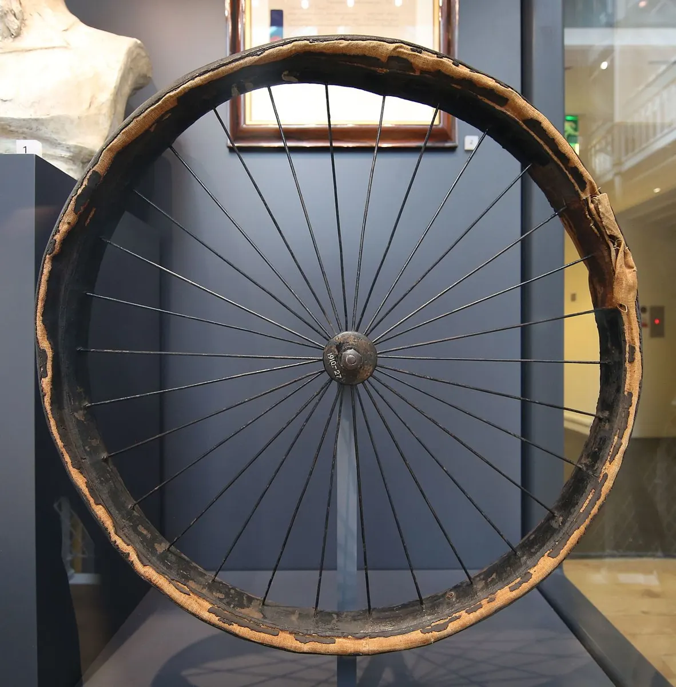

Колёса
Покрышка
Tyre
Внешняя резиновая оболочка колеса с протектором.
Состоит из корда (каркаса), борта (с проволокой или кевларовым шнуром — складной борт) и протектора. Допустимое давление написано на боковине. Размер на боковине: ETRTO (например 50-559) и дюймовый (26×1,95).
Направленный протектор ставят по стрелке на боковине. Пневматическую шину для велосипеда запатентовал Джон Бойд Данлоп в 1888 году — см. историю.
